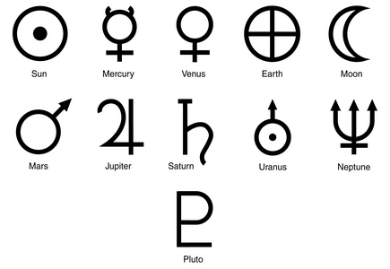
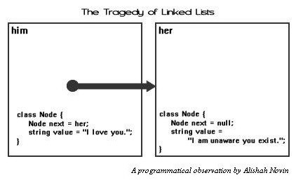

|
|
|
Sponsored Link •
|
Summary
In this installment I pave the way to the heart of Lisp, i.e. to the famous *code is data* concept. In order to do that, I will have to introduce two fundamental data types first: symbols and lists.
|
Advertisement
|
Scheme and Lisp have a particular data type which is missing in most languages (with the exception of Ruby): the symbol.
From the grammar point of view, a symbol is just a quoted identifier, i.e. a sequence of characters corresponding to a valid identifier preceded by a quote. For instance, 'a, 'b1 e 'c_ are symbols. On the set of symbols there is an equality operator eq? which is able to determine if two symbols are the same or not:
> (define sym 'a) > (eq? sym 'b) #f > (eq? sym 'a) #t
#f e #t are the Boolean values False and True respectively, as you may have imagined. The equality operator is extremely efficient on symbols, since the compiler associates to every symbol an integer number (this operation is called hashing) and stores it in an interal registry (this operation is called interning): when the compiler checks the identity of two symbols it actually checks the equality of two integer numbers, which is an extremely fast operation.
You may get the number associated to a symbol with the function symbol-hash:
> (symbol-hash sym) 117416170 > (symbol-hash 'b) 134650981 > (symbol-hash 'a) 117416170
It is always possible to convert a string into a symbol and viceversa thanks to the functions string->symbol and symbol->string, however conceptually - and also practically - symbols in Scheme are completely different from strings.
The situation is not really different in Python. It is true that symbols do not exist as a primitive data type, however strings corresponding to names of Python objects are actually treated as symbols. You can infer this from the documentation about the builtin functions hash e intern, which says: normally, the names used in Python programs are automatically interned, and the dictionaries used to hold module, class or instance attributes have interned keys. BTW, if you want to know exactly how string comparison works in Python I suggest you to look at this post:
Scheme has much more valid identifiers than Python or C, where the valid characters are restricted to a-zA-Z-0-9_ (I am ignoring the possibility of having Unicode characters in identifiers, which is possible both in R6RS Scheme and Python 3.0). By convention, symbols ending by ? are associated to boolean values or to boolean-valued functions, whereas symbols ending by ! are associated to functions or macros with side effects.
The function eq?, is polymorphic and works on any kind of object, but it may surprise you sometimes:
> (eq? "pippo" "pippo") #f
The reason is that eq? (corrisponding to is in Python) checks if two objects are the same object at the pointer level, but it does not check the content. Actually, Python works the same. It is only by accident than "pippo" is "pippo" returns True on my machine, since the CPython implementation manages differently "short" strings from "long" strings:
>>> "a"*10 is "a"*10 # a short string True >>> "a"*100 is "a"*100 # a long string False
If you want to check if two objects have the same content you should use the function equal?, corresponding to == in Python:
> (equal? "pippo" "pippo") #t
It you know the type of the objects you can use more efficient equality operators; for instance for strings you can use string=? and for integer numbers =:
> (string=? "pippo" "pippo") #t > (= 42 42) #t
To be entirely accurate, in addition to eq and equal, Scheme also provides a third equality operator eqv?. eqv? looks to me like an useless complication of the language, so I will not discuss it. If you are interested, you can read what the R6RS document says about it.
The original meaning of LISP was List Processing, since lists were the fundamental data type of the language. Nowadays Lisp implements all possible data types, but still lists have a somewhat privileged position, since lists can describe code. A Lisp/Scheme list is a recursive data type such that:
For instance, one-element lists are obtained as composition of an element with the empty list:
> (cons 'x1 '()); one-element list (x1)
Two-elements lists are obtained by composing an element with a one-element list:
> (cons 'x1 (cons 'x2 '())); two-element list (x1 x2)
That generalizes to N-element lists:
> (cons 'x1 (cons 'x2 (cons 'x3 ..... (cons 'xN '()))) ...) (x1 x2 x3 ... xN)
For simplicity, the language provides an N-ary list constructor list
> (list x1 x2 x3 ... xN) (x1 x2 x3 ... xN)
but the expression (list x1 ... xN) is nothing else than syntactic sugar for the fully explicit expression in terms of constructors.
There are also the so-called improper lists, i.e. the ones where the second argument of the cons is not a list. In that case the representation of the list displayed at the REPL contains a dot:
> (cons 'x1 'x2) ; improper list (x1 . x2)
It is important to remember that improper lists are not lists, therefore operations like map, filter and similar do not work on them.
As we anticipated in episode 4, the first element of a list (proper or improper) can be extracted with the function car; the tail of the list instead can be extracted with the function cdr. If the list is proper, its cdr is proper:
> (cdr (cons 'x1 'x2)) x2 > (cdr (cons 'x1 (cons 'x2 '()))) (x2)
At low level Scheme lists are implemented as linked list, i.e. as couples (pointer-to-sublist, value) until you arrive at the null pointer.
To give an example of how to build Scheme lists, here I show you how you could define a range function analogous to Python range. Here are the specs:
> (range 5); one-argument syntax (0 1 2 3 4) > (range 1 5); two-argument syntax (1 2 3 4) > (range 1 10 2); three-argument syntax (1 3 5 7 9) > (range 10 0 -2); negative step (10 8 6 4 2) > (range 5 1); meaningless range ()
Here is the implementation:
(define range
(case-lambda
((n); one-argument syntax
(range 0 n 1))
((n0 n); two-argument syntax
(range n0 n 1))
((n0 n s); three-argument syntax
(assert (and (for-all number? (list n0 n s)) (not (zero? s))))
(let ((cmp (if (positive? s) >= <=)))
(let loop ((i n0) (acc '()))
(if (cmp i n) (reverse acc)
(loop (+ i s) (cons i acc))))))))
Here case-lambda is a syntactic form that allows to define functions with different behavior according to the number of arguments. for-all is an R6RS higher order function: (for-all pred lst) applies the predicate pred to the elements of list lst, until a false value is found - in that case it returns #f - otherwise it returns #t. Here the assertion checks at runtime that all the passed arguments n0, n and s are numbers, with s non-zero.
The first let defines a comparison function cmp which is >= if the step s is positive, or <= if the step s is negative. The reason is clear: if s is positive at some point the index i will get greater than n, whereas if s is negative at some point i will get smaller than n.
The trick used in the loop is extremely common: instead of modifying a pre-existing list, at each iteration a new list is created ex-novo by adding an element (cons i acc); at the end the accumulator is reversed (reverse acc). The same happens for the counter i which is never modified.
This is an example of functional loop; imperative loops based on mutation are considered bad style in Scheme and other functional languages. Notice by contrast that in Common Lisp imperative loops are perfectly acceptable and actually there is a very advanced LOOP macro allowing you to do everything with imperative loops.
Actually, the range function defined here is more powerful than Python's range, since it also works with floating point numbers:
> (range 1.3 2.5 .25) (1.3 1.55 1.8 2.05 2.3)
As always, the only way to really get Scheme lists is to use them. I suggest you try the following exercises:
I will show the solutions in the next episode. If you are lazy and you want an already written list library, I suggest you to give a look at the SRFI-1 library, which is very rich and available practically in all Scheme implementations. Many of the SRFI-1 features are built-in in the R6RS standard, but many other are still available only in the SRFI-1 .
Have an opinion? Readers have already posted 18 comments about this weblog entry. Why not add yours?
If you'd like to be notified whenever Michele Simionato adds a new entry to his weblog, subscribe to his RSS feed.
 | Michele Simionato started his career as a Theoretical Physicist, working in Italy, France and the U.S. He turned to programming in 2003; since then he has been working professionally as a Python developer and now he lives in Milan, Italy. Michele is well known in the Python community for his posts in the newsgroup(s), his articles and his Open Source libraries and recipes. His interests include object oriented programming, functional programming, and in general programming metodologies that enable us to manage the complexity of modern software developement. |
|
Sponsored Links
|